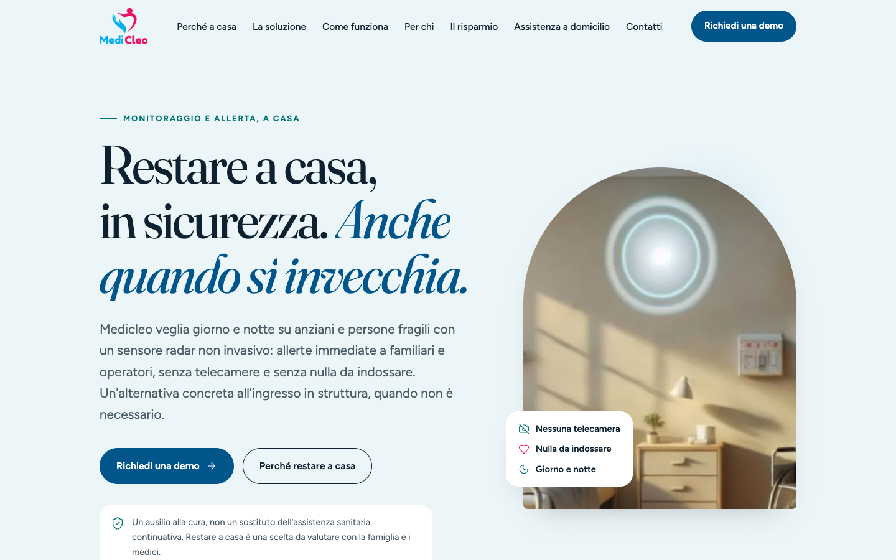

Direzione 1
Calore di casa
La casa e le persone al centro, non la tecnologia. Il blu petrolio del sito diventa una voce calma e familiare su superfici chiare e morbide, con titoli in un serif umanista e grandi frasi che si accendono piano: parla alle famiglie con la calma di una lettera. Il calore arriva dalla foto della stanza, dalle forme arrotondate e dal tono dei testi; il ciano del logo resta la luce discreta del sensore e il magenta solo il piccolo cuore. La finestra ad arco richiama la stanza di casa.
Fraunces + Figtree
Cosa corregge del sito attuale
- il nome non è più ripetuto: nel header c'è solo il logo originale (che contiene già 'MediCleo'), senza la scritta 'Medicleo' accanto
- CTA primaria nel petrolio del sito: bianco su #00558B 7.86:1, hover su Notte #002946 14.94:1
- testo secondario #4C5D6A: 6.16:1 sullo sfondo #ECF5F8, 6.82:1 sui pannelli bianchi; su Notte testo #EEF7FA all'80% 9.23:1
- il ciano del logo non è mai usato come testo su chiaro: occhielli e corsivi in ciano solo su Notte (5.91:1), su chiaro gli occhielli sono teal (5.13:1 su #ECF5F8)